7 Deformation and Tessellation
TODO: exposition about deformation and tessellation and Jacobian
7.1 Basic Deformation Data Types
Warning: If f is numerically differentiated, it may be evaluated outside of its intended domain.
procedure
(smooth-function t) → (-> Pos Pos)
t : Smooth
procedure
(smooth-jacobian t) → (-> Pos Linear)
t : Smooth
When t is Linear or Affine, (smooth-function t) is equivalent to (λ (v) (transform-pos v t)).
When t is Linear, (smooth-jacobian t) is equivalent to (λ (_) t).
value
procedure
(smooth-compose t ...) → Smooth
t : Smooth
> (combine (deform (tessellate (rectangle (pos 0 0 2) (dir 1/8 1/4 2)) #:segments 48) (smooth-compose (move-x (/ -2 pi)) (bend 360 (interval 0 4)) (twist 45) (rotate-z 45))) (basis 'camera (point-at (pos 1/2 1 1/2) (pos 1/8 0 1/8)))) 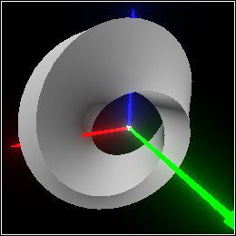
procedure
(smooth-approximate t v) → Affine
t : Smooth v : Pos
(match-let ([(linear dx dy dz) ((smooth-jacobian f) v)]) (define v0 ((smooth-function f) v)) (affine dx dy dz (pos+ origin (pos- v0 v))))
procedure
(smooth-singular? t v) → Boolean
t : Smooth v : Pos
procedure
(smooth-consistent? t v) → Boolean
t : Smooth v : Pos
7.2 Tessellation
procedure
(tessellate pict [ #:segments segments #:max-edge max-edge #:max-angle max-angle]) → Pict3D pict : Pict3D segments : Integer = (current-tessellate-segments) max-edge : (U #f Real) = (current-tessellate-max-edge) max-angle : Real = (current-tessellate-max-angle)
Edges that approximate part of an arc represent no more than max-angle degrees of the arc.
Other edges are shorter than max-edge.
> (current-pict3d-add-wireframe 'color)
> (combine (tessellate (rectangle origin (dir 1/4 1/4 1)) #:segments 4) (basis 'camera (point-at (pos 0.75 0.75 1.25) origin))) 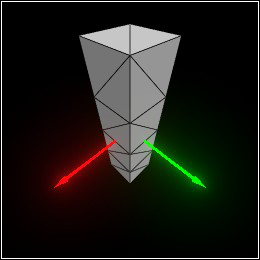
> (tessellate (sphere origin 1/2) #:max-angle (/ 90 4)) 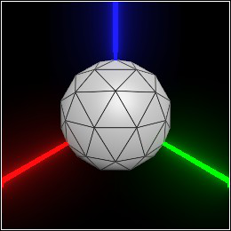
> (tessellate (cylinder origin 1/2 #:arc (arc 90 45)) #:max-angle 45 #:max-edge 1/4) 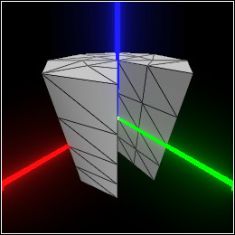
> (tessellate (cone origin 1/2) #:max-angle 30 #:segments 32) 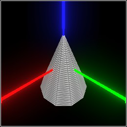
> (current-pict3d-add-wireframe #f)
procedure
(adaptive-tessellate pict [ t #:segments segments #:max-edge max-edge #:max-angle max-angle #:max-iters max-iters]) → Pict3D pict : Pict3D t : Smooth = identity-smooth segments : Integer = (current-adaptive-segments) max-edge : (U #f Real) = (current-adaptive-max-edge) max-angle : Real = (current-adaptive-max-angle) max-iters : Integer = (current-adaptive-max-iters)
> (current-pict3d-add-wireframe 'color)
> (define c (basis 'camera (point-at (pos 2.5 1.5 1.0) (dir -0.75 -0.5 -0.25)))) > (define t (bend 90 (interval -1/2 1/2))) > (define p (adaptive-tessellate (cylinder origin (dir 1/2 1/2 2)) t)) > (combine c p) 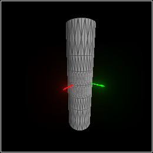
> (combine c (deform p t)) 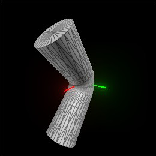
> (current-pict3d-add-wireframe #f)
Requests an initial tessellation of each shape with max-angle = 90 and max-edge = +inf.0.
For up to max-iters iterations, splits triangle edges that, when transformed, would be too long or represent too many degrees of an arc, and moves the new vertex onto the shape’s surface.
For up to 3 iterations, splits triangle edges that change orientation when transformed, using flbracketed-root to solve for locations at which t’s Jacobian determinant is zero.
> (define t (smooth (λ (v) (match-define (pos x y z) v) (pos x y (* x z))))) > (deform (tessellate (ellipsoid (pos -1/3 0 0) (dir 1 1/2 1/2))) t) > (adaptive-deform (ellipsoid (pos -1/3 0 0) (dir 1 1/2 1/2)) t) 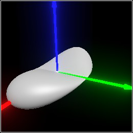
procedure
(current-tessellate-segments segments) → Void segments : Integer
= 12
procedure
(current-tessellate-max-edge) → (U #f Positive-Flonum)
(current-tessellate-max-edge max-edge) → Void max-edge : (U #f Real)
= #f
procedure
(current-tessellate-max-angle max-angle) → Void max-angle : Real
= 15.0
procedure
(current-adaptive-segments segments) → Void segments : Integer
= 0
procedure
(current-adaptive-max-edge) → (U #f Positive-Flonum)
(current-adaptive-max-edge max-edge) → Void max-edge : (U #f Real)
= #f
procedure
(current-adaptive-max-angle max-angle) → Void max-angle : Real
= 15.0
procedure
(current-adaptive-max-iters max-iters) → Void max-iters : Integer
= 5
7.3 Deformation Constructors and Combiners
procedure
(deform-pos v t) → Pos
v : Pos t : Smooth
procedure
(deform-dir v dv t) → Dir
v : Pos dv : Dir t : Smooth
procedure
(deform-norm v dv t) → (U #f Dir)
v : Pos dv : Dir t : Smooth
These are analogous to transform-pos, transform-dir and transform-norm, respectively. (In fact, when t is Affine, they simply apply their affine counterparts.) The main difference is that deform-dir and deform-norm require a position argument to apply the Jacobian to.
procedure
(deform-affine t0 t) → (U #f Affine)
t0 : Affine t : Smooth
(match-let ([(affine dx dy dz v) t0]) (affine (deform-dir v dx t) (deform-dir v dy t) (deform-dir v dz t) (deform-pos v t)))
Group transformations, and untessellated solid objects such as spheres, are deformed using deform-affine.
procedure
(adaptive-deform pict t [ #:segments segments #:max-edge max-edge #:max-angle max-angle #:max-iters max-iters]) → Pict3D pict : Pict3D t : Smooth segments : Integer = (current-adaptive-segments) max-edge : (U #f Real) = (current-adaptive-max-edge) max-angle : Real = (current-adaptive-max-angle) max-iters : Integer = (current-adaptive-max-iters)
procedure
(local-deform t local-t) → Smooth
t : Smooth local-t : Affine (local-deform pict t local-t) → Pict3D pict : Pict3D t : Smooth local-t : Affine
The two-argument version is equivalent to (smooth-compose local-t t (affine-inverse local-t)). In English, undo local-t, do t, then redo local-t.
> (twist (tessellate (pipe origin (dir 1 1/2 1))) 90) 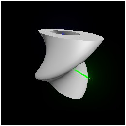
procedure
pict : Pict3D angle : Real (bend pict angle zrange) → Pict3D pict : Pict3D angle : Real zrange : Interval
If zrange is given, only that interval on the z axis is bent; otherwise, the entire z extent of pict is used. The bent interval always retains its length.
> (combine (bend (tessellate (ellipsoid origin (dir 1/8 1/16 1))) 270) (with-color (rgba "orange") (bend (tessellate (rectangle origin (dir 1/8 1/4 1))) -180)) (with-color (rgba "lightgreen" 0.5) (bend (tessellate (cone (pos 0 0 1) (dir 1/4 1/8 1))) 90 (interval 1/2 2))) (with-color (rgba "crimson" 0.5) (bend (tessellate (cylinder (pos 0 0 -1) (dir 1/4 1/8 1))) -45 (interval -1/2 -2))) (basis 'camera (point-at (pos 0.8 1.6 0.5) (pos 0 0 1/4)))) 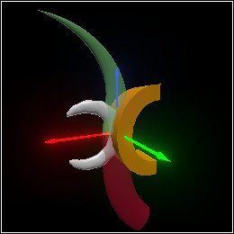
> (require plot) > (define (f1 z) (exp (- (sqr z)))) > (define (f2 z) (if (> (sqr z) 1) 0 (sqrt (- 1 (sqr z)))))
> (plot (list (function f1 #:label "f1") (function f2 #:color 2 #:label "f2")) #:x-min -2 #:x-max 2 #:y-min 0 #:y-max 1 #:x-label "z" #:y-label "α") 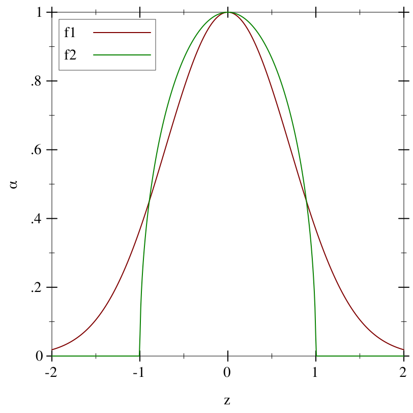
> (define (α1 v) (f1 (pos-z v))) > (define (α2 v) (f2 (pos-z v))) > (define p (tessellate (rectangle origin (dir 1/2 1/2 2)) #:segments 24)) > (define c (basis 'camera (point-at (pos 2 2 1) (pos 0 0 1/4)))) > (combine c (deform p (twist 90))) 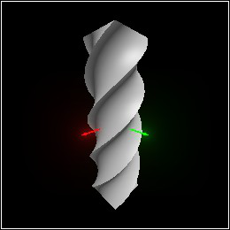
> (combine c (deform p (smooth-between identity-smooth (twist 90) α1))) 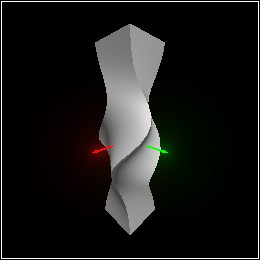
> (combine c (deform p (smooth-between identity-smooth (twist 90) α2))) 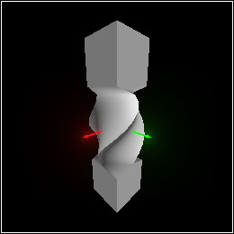